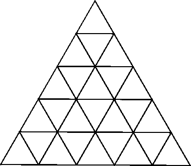
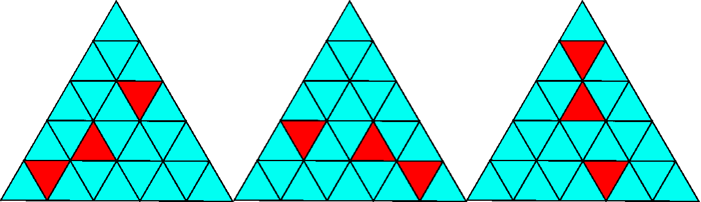

Triangle Coloring
Triangle Coloring

The picture above is a "5-check" triangle: an equilateral triangle subdivided into $5^2 = 25$ small triangles. We colour exactly three of these small triangles red and leave the rest cyan.
Two colourings are called clones if one can be obtained from the other by a $120^\circ$ rotation. The three patterns below are all clones of each other:

For an $N$-check triangle, call a set of colourings good if it contains no two patterns that are clones of one another. What is the largest possible size of such a good set when $N = 7$?
Solution
A $7$-check triangle has $49$ small triangles, so there are $\binom{49}{3} = 18424$ ways to pick the three red ones (ignoring rotation).
Under the rotation group of order $3$, each orbit has size either $3$ (the generic case) or $1$ (fixed by the rotation). A configuration is fixed iff its three red triangles form a single rotation orbit themselves — equivalently, the three reds are the three rotations of one small triangle. The centre triangle is the only one fixed by the rotation, and the remaining $48$ small triangles split into $16$ rotation orbits of size $3$. So there are exactly $16$ colourings fixed by the rotation.
The maximum-size good set picks one representative per orbit, giving
$$\frac{18424 - 16}{3} + 16 = 6136 + 16 = 6152.$$
Answer: $6152$
Notes
—